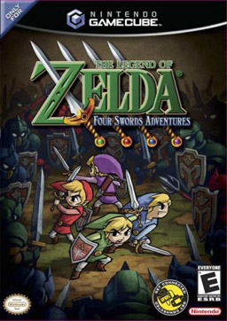

Four Swords Adventures übertrug das Multiplayer-Konzept auf die Heimkonsole, nutzte GBA-Konnektivität und bot eigenständig gestaltete Levels für kooperatives und solo-orientiertes Gameplay mit Fokus auf Zusammenarbeit und geteilte Rätsel.
| Titel | The Legend of Zelda: Four Swords Adventures |
| Veröffentlichung | 18. März 2004 (JP) |
| Plattform | GameCube |
| Entwickler | Nintendo EAD |
| Produzent | Nintendo |
| Komponist | Various |
Die Heimkonsolen-Umsetzung erweitert Multiplayer mit GBA-Konnektivität: eine Mischung aus Einzel- und Mehrspielerleveln, bei denen Teams Aufgaben verteilen, Gegnerströme kontrollieren und wechselnde Perspektiven nutzen müssen. Der Content bietet sowohl kooperative Bosskämpfe als auch kompetitive Elemente (z. B. Sammelwettbewerbe). Levelarchitektur ist modular und belohnt Koordination.